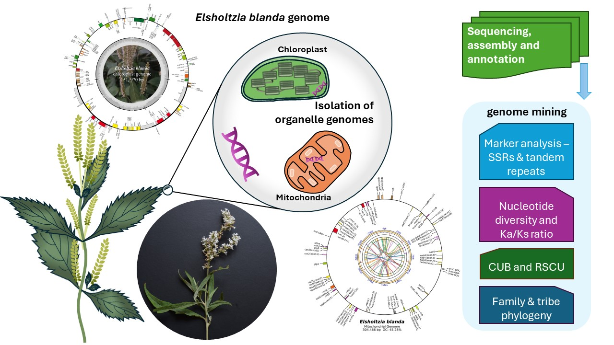

About Me

I am an academic and researcher dedicated to unlocking the genetic potential of medicinal plants. My work spans organellar genome mining, plant molecular biology, bioinformatics, and the rich traditions of ethnobotany.
Expertise
Plant Genomics, Organellar Genome Mining, Bioinformatics
Education
PhD (IIT Guwahati), MSc Botany (Pune University)
Research Focus
Medicinal Plant Biodiversity, Ethnobotany, GHG Inventory
Key Services
NGS Data Annotation, Comparative Genomics, Flow Cytometry
Photo Gallery
My Research



Publications
Get in Touch
Email Me
bimal_kum.sherubtse@rub.edu.bt
ORCID
0000-0002-2154-7676
ResearchGate
Profile Link

Google Scholar
Scan for Profile